蛋黄酱或者荷兰酱蛋黄酱或者荷兰酱
蛋黄酱或者荷兰酱蛋黄酱或者荷兰酱配料
2个蛋黄
300毫升橄榄油
调味料
方法
1. 用手动打蛋器或手持搅拌器搅拌蛋黄和调味料。
2. 非常缓慢地滴入橄榄油，一边滴一边搅拌。如果是做荷兰酱，则需要用100克融化的黄油代替橄榄油。
在一定程度上，蛋黄酱和荷兰酱是一样的——它们的制作方法一样，只是加入蛋黄液的油脂类型不同。在两种制作过程中，蛋黄都发挥了奇妙的魔力，使得成品变得香浓滑腻。成品逐渐成形的过程就像魔法，我怎么看都看不厌。
蛋黄酱和荷兰酱的相似之处就是数学寻找的那类事物：一些大体相似，只有微小细节不同的事物。这是一种省力的做法，因为你可以一次性学会做几件事。烹饪书也许会告诉你，制作荷兰酱需要使用一种不同的方法，但我总是置之不理，以便让我的生活更简单一些。数学也是如此，通过寻找除了微小细节外其他大体一致的事物来达成简化的目的。
抽象作为蓝图
农舍派、牧羊人派和渔夫派三者大同小异，唯一的不同就是土豆泥下面的馅料。各类奶酥也是如此，做不同的奶酥并不需要不同的食谱，你只消学会做奶酥皮，然后把你喜欢的水果放进模具作为馅料，再把奶酥皮放在上面一起烘焙即可。
我的另一个最爱是倒置蛋糕。在烘焙倒置蛋糕的时候，你需要把水果放在模具底层，再把蛋糕预拌粉倒在上面，烤好以后把蛋糕整个倒过来，这样水果就在上面了。为了让蛋糕更美味，你也可以在放水果前在模具底层涂上一层加了红糖的融化的黄油，这样你就能为水果蛋糕增添一丝焦糖风味了。当然，一些水果比另一些水果更适合这种做法，比如香蕉、苹果、梨和李子。葡萄不是很适合。西瓜则完全不适合。对奶酥来说也是如此。西瓜奶酥？还是算了吧。
咸味派的制作方法也差不多。先烤好空的饼皮，放进你喜欢的馅料，再放进搅拌好的鸡蛋和牛奶（或奶油），整个放进烤箱烤制一下——完成。馅料可以是奶酪培根、鱼、蔬菜，任何你喜欢放的食材。
上述所有的“食谱”都并非真正完整的食谱，只是蓝图或框架。你可以加入你自己选择的水果、肉类或其他馅料来制作不同的成品，当然，你需要从那些适合做馅料的食物里选择。
数学也是如此。数学致力于寻找事物的相似之处，由此，对于很多不同的情况，你只需要一个“食谱”就可以应付了。关键在于你要先忽略一些细节，让事物变得更容易理解，在这之后，你可以考虑重新加入额外的变量。这就是抽象化的过程。
就像西瓜奶酥一样，当你提取出那份经过抽象化的“食谱”之后，你可能会发现它并不能应用于所有的“食材”。但至少你可以用它进行各种尝试，而且有些时候，看起来完全不相干的事物也可能适用于同一份食谱。
思考一下等边三角形的对称：
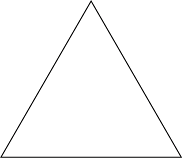
等边三角形既是轴对称图形，也是旋转对称图形。那么，除了把三角形剪下来折一折、转一转以外，我们还有别的方法可以描述它的对称性吗？
有一个办法是把三个角分别标为1、2和3，如下图所示：
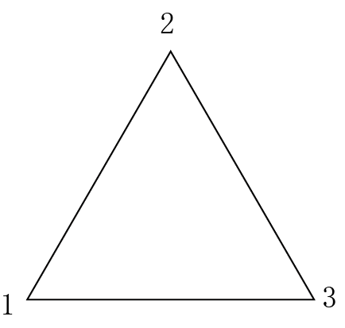
然后，我们就可以讨论这些数字可以如何交换位置了。比如，如果我们以一条中垂线为轴翻转三角形，那么数字1和3就交换了位置。如果我们把这个三角形顺时针旋转120°，那么数字1就会被转到数字2之前的位置，数字2就会被转到数字3之前的位置，数字3就会被转到数字1之前的位置。
你会发现，等边三角形的6种对称方式精准地对应了数字1、2和3的6种位置交换方式。等边三角形的三种轴对称，分别对应了数字1和3、1和2、2和3的换位。等边三角形的三种旋转对称则是：顺时针旋转120°后与原三角形重合，顺时针旋转240°后与原三角形重合，以及旋转360°后与原三角形重合。
该例表明，抽象上来看，一个等边三角形的对称问题与数字1、2和3的排列问题相同，因此，我们可以同时研究这两个问题。
抽象就是收起你不需要的东西
抽象就像在准备烹饪时把你暂时不需要的厨具和配料收起来，这样厨房就不会显得那么杂乱。换句话说，抽象就是把你目前不需要的想法收起来，这样你的大脑就不会那么杂乱。
你更擅长的是清理自己的厨房还是清理自己的大脑？（我个人肯定更擅长后者。）抽象是数学研究的重要的第一步。这也是一个会让你感到有些不适的步骤，因为它让你离现实远了一些。我从来不把食品加工机收起来，因为移动它很麻烦，而且我想确保在我想用的时候随时可以使用它，而不必大费周章地把它从碗橱里拿出来。也许在大脑中进行的抽象过程对你来说就与此类似。
看看下面这个问题：
我买了两张邮票，每张36便士。我一共花了多少钱？
这种会出现在小学课堂中的问题，也被称作“文字题”（word problem），因为它是用文字来表述的。孩子们会被告知，解这种题的第一步就是把这道文字题转化为数字和符号：
36×2=?
这就是一种抽象的过程。我们丢弃了，或者说忽略了我们要买的是邮票这件事，因为这与解题无关。邮票也可以替换为苹果、香蕉、猴子……而我们要计算的总和是一样的，解也一样：72便士。
那么下面这道题呢？
我父亲的年龄现在是我的年龄的3倍，10年以后，他的年龄将会是我的年龄的2倍。那么，我现在的年龄是多少岁？
或者这道题：
我有一个6英寸
蛋糕的食谱，其中写明了覆盖蛋糕的顶部和侧面总共需要用到多少克糖霜。那么，覆盖一个8英寸蛋糕的顶部和侧面需要用到多少克糖霜呢？
对于那道关于邮票的题目，你大概不需要写下计算过程就可以得出结果，因为答案非常显而易见。但要解答后面两个问题，你可能就需要进行一些抽象化的工作，你需要忽略诸如父亲、蛋糕、糖霜这些细节，写下包含数字和符号的计算式。在本章的后面部分，我们会揭晓这两道题的答案。
太真实的事物不遵循数学规律
如果你曾经试过教小朋友学算数，你可能用过如下这个例子。你试着让他们解决这个实际生活中的问题：
如果奶奶给你5颗糖，爷爷又给你5颗糖，你一共有几颗糖？
而孩子可能会回答说：“一颗都没有，因为我把它们都吃完了！”
这里的问题在于，糖并不遵从逻辑规则，所以用数学来研究它们不管用。我们可以强迫糖遵从逻辑吗？比如，我们可以给这个例子增加一条额外的规定：“……并且你不能吃这些糖。”但如果不让孩子吃糖，那么糖的意义何在？我们可以把糖视为某种“东西”而不再是糖。我们丢掉了一些现实性的细节，却获得了新的视角和更高的处理效率。数字的好处在于，我们可以研究“东西”，并且不必因为“东西”自身属性的不同而改变我们的思考路径。一旦我们明白2+2=4，我们就知道了两个东西加上另外两个东西会变成四个东西，不管这些东西是糖、猴子、房子还是别的什么。这就是抽象的过程：把糖、猴子、房子或别的什么，变成数字。
数字是如此的基本，我们很难想象没有它们的生活，也很难想象发明它们的过程。当我们数数的时候，我们甚至都没意识到自己已经在使用抽象思维了。看小孩子们努力地学算数会让你更容易意识到这件事，因为孩子们尚未适应这一从具体到抽象的跨越。
数字作为一种抽象形式
我曾经在一所小学里帮忙教课，在那里，我认识了一位精力充沛的孩子妈妈。她也在那所学校帮忙。她告诉我，当别的妈妈骄傲地宣称她们的孩子可以数到20或30时，她会感觉很沮丧。但她会立即这样反驳：“我儿子只能数到3，但他明白3到底是什么意思。”
她说的有道理。
当一个孩子刚开始“学着数到10”的时候，他们所做的不过是学着背一首小诗，像是“小小蜘蛛儿，爬上排水管……”一般。只不过，这首小诗是这样写的：
“1，2，3，4，5，6……”
之后他们会意识到，这首诗和指东西有关，于是他们便开始随意地一边指东西，一边背这首“诗”。
再然后，他们意识到他们应该在背这首诗的时候，每念一个字，就指着一样东西，但他们很难确保每样东西只被指过一次。所以当大人问“这幅图里有几只鸭子”的时候，他们每次的回答都会不同。他们也可能会认定某一个数字，比如6，然后把所有东西都数成6个，也不管鸭子到底有几只。
最后，他们意识到他们要把这首诗里的每一个字都精准地对应上一样东西，一字一物，不多不少。直到此时，他们才真正学会数数。这就是一种抽象化的过程，而且是一种出奇深奥的抽象化过程。
试想一下做买卖但不会数数的情景。“嘿，你的每一只羊，我都用一袋谷子来交换。”然后你就得去把谷子和羊群一一对应排列在一起，以确保每只羊确实都换到了一袋谷子。后来你发现，在面对一群羊和好几袋谷子的时候，一边指着羊或谷子一边有韵律地背一首小诗会更方便。这首诗可以是关于任何内容的，只要你在指着羊和谷子的时候背的是同样的诗即可。它甚至可以是“点兵点将”（“Eeny meeny miny moe”）这样毫无意义的诗。
最后，你创作了一首各方面都很合适的诗，并在每次做买卖的时候都坚持使用这首诗，一劳永逸地解决了所有的问题。于是突然间，你创造了数字。这就是我们在“学习数数”的过程中不曾留意的抽象化过程。由此我们也知道了，简单地学习背诵“1、2、3、4……”这首诗与理解如何用它来数数是截然不同的两件事。
小心别扔掉太多
每个人都知道，婴儿和洗澡水不能一起倒掉。当我们到处简化和理想化我们的问题情境时，我们必须很小心地避免过度简化——我们不能把研究对象简化到让它们失去了其所有有用的特性。比如，当我们在搭乐高积木时，我们可以忽略它们的颜色，但我们不能忽略它们的大小，因为积木的大小会影响我们具体要怎么搭。但如果我们只是用乐高积木来数数，那么尺寸就是可以忽略的。
决定忽略哪些特点主要取决于我们讨论的情境。这个重要的话题我们之后会再来探讨。对于范畴论而言，情境非常重要。
假设你要规划100人的出游活动，为此你需要租几辆小巴。已知每辆小巴可以坐15人，那么你一共需要租多少辆小巴呢？简单来说，你需要计算的是：
100 ÷ 15 ≈ 6.7
而得到这一结果后，你还要进一步考虑具体的情境：你不可能租0.7辆小巴，所以为了将所有人包括在内，你需要将结果“五入”为7辆小巴。
那么再看看这个情境。你想给朋友邮寄一些巧克力，一张平信邮票最多可以用来寄100克物品。已知每块巧克力是15克，那么你一共可以寄多少块巧克力呢？同样，你需要计算的是：
100 ÷ 15 ≈ 6.7
你得到了同样的结果，但这次的情境与上一次不同：你不可能寄0.7块巧克力，所以为了不超出预算，你需要将结果“四舍”为6块巧克力。
抽象作为简化
曾经，在经历了一次令我心碎的悲惨事件后，我好心的朋友们为了能更好地“理解”我，开始不断地询问我各种关于此事的细节，而这一举动只让我感到越来越厌烦。最后，一个聪慧的朋友对我说：“其实这件事很简单。你失去了你所爱的某样东西。”这就是任何人需要知道的关于此事的情况。然后，她成功地将我的注意力转移到探讨将事物简单化而非复杂化是一项多么明智的行动，即便有些人会觉得这样做让你看起来很蠢。“简单化”和“过度简化”有一个微妙的差别：后者意味着你想错了，而且忽略了重要的问题。
那位朋友的智慧就是一种抽象，她将心碎的本质提炼出来了。看上去，抽象好像会带着你逐步远离现实，但实际上，它会带领你逐步贴近事物的本质或核心。要抵达核心，你就必须剥离衣服、皮肉和骨头。
抽象作为对事物理想模式的研究
路标也是一种抽象形式。它们并不会为你细致地描绘路途中可能出现的各种情境，而是会描绘一种理想化的情境，并凸显该情境的核心特征。比如，不是所有的弓形桥都长成下面这样：
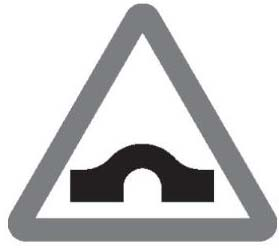
但这个路标概括出了弓形桥的本质特征。同理，不是所有过马路的孩子都长成下面这样：
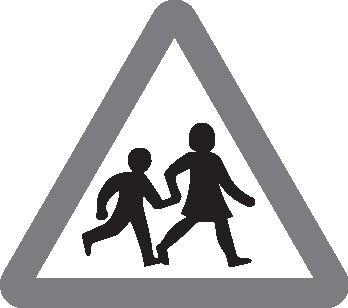
但此类简化的优点是显而易见的。当你在开车的时候，看懂路标比读懂一句话要快得多；而且，路标也能让不熟悉当地语言的外国人更容易理解。而路标的缺点是，在你刚开始学习开车的时候，你必须先弄懂种种稀奇古怪的路标都是什么意思。总有一些路标要比另一些路标更容易看懂。比如下图左边这种就比右边这种贴近现实许多：
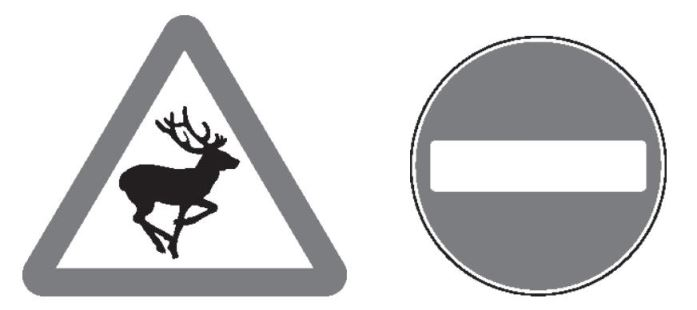
上图右边这个“禁止入内”的路标就非常抽象。它看起来完全不像它所代表的意思。（“禁止入内”看起来应该像什么样子呢？）但在现实生活中，它的作用更重要——你在你的驾驶生涯中遇到的“禁止入内”的路标想必要远多于“有鹿出没”的路标。
数学的抽象化过程的弊端之一就是，你需要用到一大堆稀奇古怪的符号。其原因与上述情况类似：一旦你明白了这些符号的意思，它们使用起来就会变得很方便，从而你可以将更多的脑力集中用于攻克更为复杂和重要的数学问题。符号的使用也使数学可以跨越语言——你可能会惊讶地发现，读一本用某种你不懂的外语写成的数学书并没有那么困难。
数学里最为基本的“古怪符号”就是我们经常见到的运算符号：+、-、×、÷、=。一旦你熟悉了这些符号，读懂“2+2=4”就会比读懂“二加二等于四”简单、快捷许多。而当你所学到的数学越来越复杂，其所涉及的符号也会变得越来越复杂，就比如下面这些：
Σ，ʃ，∮，，，……
我不打算解释这些复杂符号的意义，我只是想举个例子。就像路标一样，以符号为主要语言的数学一开始看上去的确很难理解，但长远来看，符号起到了重要的简化作用。
用地图指导现实的困难
读懂地图为什么不容易？看懂地图不难，难的是将地图与实际路况一一对应，让地图发挥效用。地图是对现实的抽象，它选择了现实的某些方面进行描述，为的是让你更容易找到你要找的地方。在实际应用中，困难存在于抽象与现实之间的转化，也就是在地图和你要找的地方之间建立联系。
谷歌地图提供了一种将抽象转化为现实的便捷之路，它是通过谷歌街景和全球定位系统实现的。通常，在地图使用中，最难弄明白的是：
你在哪里？
你面朝什么方向？
这两点是地图和现实之间的重要连接点。全球定位系统能帮你弄清楚你在哪里，而谷歌街景则能为你提供一张关于你所在之地的现实场景照片，让你弄清楚自己面朝什么方向。
数学也必须经由这几个步骤来实现。首先，你需要提炼现实。然后，你需要在抽象的世界进行逻辑推理。最后，你需要把这些抽象的东西再应用到现实中去。不同的人擅长这个过程中的不同步骤。整个过程最核心的部分就是游刃有余地在抽象和现实之间穿梭，而要做到这一点，就必须先有人来画一张地图。
比如，你有一个8英寸方形蛋糕的食谱，而你现在想做一个圆形蛋糕。那么，你应该使用什么尺寸的圆形模具呢？首先，你需要将这个实际生活问题抽象化为数学语言：我们想找到一个与这个已知的正方形（8×8=64）面积相同的圆形。圆形的面积是πr2，r是半径。如果我们用d来表示圆形的直径（因为蛋糕模具的大小通常是用直径而非半径来表示的），那么我们就需要此直径满足：
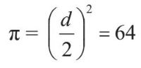
现在，我们需要进行逻辑推理，用代数运算来确定d是多少。（就整个问题解决过程而言，只有这一步涉及真正的数学。）
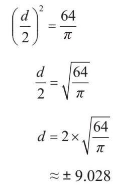
最后，我们需要把得到的结果应用到现实中去。首先，我们不需要那个负数解，因为我们在讨论的是蛋糕模具，所以解必须是正数。其次，我们不需要那么多小数点，因为蛋糕模具的尺寸通常是用整数来表示的。综上所述，我们需要的那个现实答案是9英寸的圆形蛋糕模具。
数学以及使用地图的关键就在于针对不同情境进行不同程度的抽象。当你在看某条街的地图时，你需要地图显示出这条街上所有楼房的照片吗？你需要知道哪里有草地，而哪里没有吗？答案取决于你准备用地图来做什么，对于不同的情况，你需要的地图也不一样。如果你在开车，你就需要知道哪些路是单行道，但如果你在步行，这条信息就不重要了。在数学里也是如此，不同的情境需要不同程度的抽象。
数字1是什么？回答这个问题有两种方法，它们分别是两种不同程度的抽象。
第一个回答：1是数数的基本单元。
第二个回答：1是唯一一个其他数字乘以它之后不会发生变化的数字。
这两个答案在不同的情境下都是有意义的。当我们需要做加法的时候，第一个答案就很有用；在数学里，这个答案相当于将数字定义为一个“群”——一个我们可以做加法的世界。而当我们想讨论乘法的时候，第二个概念就很有用了；这个答案相当于将数字定义为一个“环”——一个我们既可以做加法也可以做乘法的世界。关于群的研究与图形的对称性相关，关于环的研究与图形的其他几何学特性有关。我们稍后会继续讨论这个问题。[书籍分 享V 信zmxsh998]
不合适的地图会让人沮丧，因为它们不是太具体就是太不具体。（比如，我就不喜欢那些会显示楼房三维照片的地图，它们太过具体，会阻碍人们分辨街道的走向。）
在数学中也是如此。如果你把某种过于复杂的数学概念或方法应用到一个并不真正需要它的情境中，你就会觉得这种数学概念或方法毫无意义。这就好比用杜威十进制分类法来给你仅有的20本书归类一样。
抽象的跳高
我上学的时候很不擅长跳高。当然，我早就说过自己不擅长各种运动，但跳高是我尤其不擅长的一项，我甚至跳不过最矮的那根杆。问题是，没有人教我怎么才能跳过最矮的那根杆。我记得班上的一部分同学好像天生就会跳，而其他不会跳的人则被告知再试一次，再试一次，再试一次。但是当你在众人面前反复几次碰掉横杆的时候，你会忍不住失去希望并放弃尝试。
思考越来越抽象的概念与跳高多少有些类似。你必须跳过被放置得越来越高的横杆。而如果在最开始没有人给你解释如何才能跳过去的话，你就会一直碰掉横杆，直至放弃尝试。不同的人会在不同的“高度”达到自己的抽象极限，就像在跳高中，横杆每提高一次就会有一部分人失败退出。
从具体事物到数字的抽象对许多人来说并不困难，他们甚至都没有意识到自己进行了这样的抽象转换。让不少人觉得难以逾越的第一道横杆很可能是从数字到变量x 和y的转换。他们不会进行这种转换，也不理解这种转换的意义，因此他们在数次失败的尝试后选择了放弃。（就像我始终不理解跳高的意义一样。但现在，我明白了背越式跳高是一种能使你的身体以一种优雅的姿态越过横杆的有效方式。如果当时有人告诉我，完成一次跳高甚至不需要让你的身体重心越过横杆，我应该会对跳高更感兴趣。）
另一个很多人在学习数学的过程中会遇到的瓶颈是微积分——一种全新的、奇怪的，甚至可以说是狡猾的运算和推理“无穷小”的事物的方法。一部分人通过了严格微积分的考试，但仍然不幸在数学本科阶段或博士阶段遇到了瓶颈。
大多数人只会在大学的数学课上学到严格微积分。人们认为它难，是因为它不符合人们通常所理解的数学——确切地描述及阐释事物并给出高度确定性的答案。
中学里的微积分通常会用于解决某些具体问题，比如：“如果你画出了y=x2的函数图像，那么x=0到x=2之间曲线下阴影部分的面积是多少？”
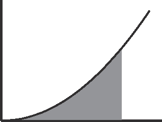
在中学里，老师会教我们这样求解：“对x2进行积分后得到x3/3，然后代入x=2，得出解为8/3。”
但在大学里，我们需要做的是证明这个计算过程的有效性。在中学，我们通常会用一种实验性的方法给出证明，即在小方格纸上画出函数图，再数一数阴影部分有多少个小方格。因为总会有一些小方格没有被阴影填满，所以只有当小方格无穷小的时候，我们才能得出真正精确的答案。
严格微积分将计算阴影面积的论证过程纳入滴水不漏的逻辑分析，这反而让人们更加困惑，因为它没有以人们期待的那种方式给出一个确切的答案。相反，它给出的回答是：画着无穷小的小方格的纸是不存在的，因此当我们用方格越来越小的纸画函数图时，我们会发现阴影面积的数值越来越接近8/3。进而我们可以证明，无论我们希望这个数值有多接近8/3，总有一个尺寸的小方格可以满足我们的要求。
资深的数学学者可能会遇到的一个抽象瓶颈则是范畴论。他们遇到这个困难时的反应就和中学生遇到x和y时的反应一样——他们不理解为什么要这么做，并且拒绝进一步的抽象。每到这时，我就会想起约翰·拜艾茲（John Baez）教授在国际范畴论论坛上谈到抽象时提出的观点：
如果你不喜欢抽象，那你为什么还要研究数学呢？也许你该去金融行业，毕竟，那里所有的数字前面都有一个美元符号。
目前来看，我暂时还没有遇到我无法突破的抽象瓶颈，但我仍然记得我曾遇到过的几次重大挑战，在那些时刻，我总觉得自己必须奋力一搏才能越过面前的横杆。
我母亲教会了我如何画x2的函数图，就像这样：
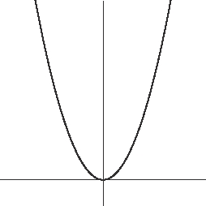
我清晰地记得自己对于数字的取平方过程竟然可以转化为一个曲线图像这件事的极度困惑。我坐在家里的绿色大扶手椅上想啊想，想到我的大脑都快要从头骨里面跳出来了。在我的记忆里，这就是我每一次在做研究时遇到一个很难理解的数学概念时的真实感受。
我很擅长解包含变量x 的方程式，比如：
2x+3=7
我知道我可以将这个方程式进行如下变换：
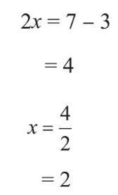
然而，当我第一次遇到一个包含a、b和c而非数字的方程式时，例如：
ax+b=c
我清晰地记得自己完全想不出来该怎样解出这个方程式的x等于多少，因为我根本无从知道a、b和c分别是多少。我知道应该在等式的两边同时减去b，但我不知道减去b之后，等式的右边该写什么。我还记得，当有人告诉我等式的右边应该是c - b的时候，我感觉自己好傻。为什么我就没想到这个答案呢？所以，这个方程式的解是：
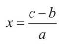
就像我总跟我的学生们说的那样，当你因为之前没有搞懂一件事而觉得自己很傻的时候，这种心情恰恰说明，你现在比当时更聪明了。
我印象中最近的一次突破抽象瓶颈，是我刚开始学习范畴论的时候。为了叙述的完整性和趣味性，我还是先来说明一下这个抽象概念是什么吧——“只包含一个对象的范畴就是幺半群”。尽管笑吧，但这就是当时让我困惑不已的那个概念。我连续几天都在思考这个概念，再一次感觉到我的大脑快从头骨里面跳出来了，仿佛回到了第一次看到曲线图像的时候。而现在，只有一个对象的范畴就是幺半群这个概念对我而言已经是一个理所当然的事实，所以我也知道，我肯定比当时更聪明了。现在就来解释这个例子的含义还为时尚早，我会在本书的第二部分探讨这个问题。
我们之后会谈到，范畴论研究的是事物之间的关系，一个范畴就是一个研究这些关系的数学情境。一个幺半群也是一个数学情境，只不过其涉及的研究对象是更具体的东西，比如数字及类似事物的乘法。“只有一个对象的范畴就是幺半群”这一概念呼应了将数字看作世界与自己之间的关系的观点。我知道这听上去有些怪异，但这一理解方式对明白这个概念的含义非常重要。
制造解决问题的机器
我们都希望找到制造金蛋的方法，但如果我们能找到直接“制造”一只下金蛋的鹅的方法，那就更好了——一个下金蛋的鹅的制造机。更进一步，如果我们能制造一个专门用来制造上面这种机器的机器，岂非更佳？一个制造下金蛋的鹅的机器的机器。这就是一种抽象：制造机器来做某件事，而不是直接去做某件事。这种做法的目的是节省人力和脑力，让人类只需要负责思考那些机器做不到的事情。
要制造一台机器去做本来由人来做的工作，你首先需要做到在不同的层面上对这项工作有所理解。当你走在一个你很熟悉的地方时，你不会去想你正在什么街道上走路，或者在哪个路口、什么时候需要转弯，你只需要跟着自己的直觉走就好。但如果你要告诉别人该怎么走，你就需要更仔细地分析这条路你具体是怎么走的，以便解释给别人听。也许你也有过这样的经历：当你向当地人打听某条街道具体在哪里时，他们往往回答不上来，原因就在于，当你走在你自己家乡的街道上时，你并不会特地去想这些街道的名字。
学习外语也是如此。当你学习的是自己的母语时，你通常不会去思考它的具体使用规则——你会本能地模仿你周围的大人。而当你长大成人，某个外国人问起关于你的母语中一些让他难以理解的部分时，你就不得不回过头去以一种完全不同的方式分析自己究竟是如何使用这种语言的。
如果你想要制造一台做蛋糕的机器，你就必须把制作蛋糕的每个步骤分析得清清楚楚，这样你才能弄明白该如何让机器去完成这个任务。即便只是打鸡蛋也需要进行认真的分析——我们是怎么知道该用多大的力气把鸡蛋磕到碗上的呢？
前文中的解方程就是此类机器的一个例子。首先，我们需要学习怎么解这种方程：
2x+3=7
然后，我们要做的是发明一个“机器”来解这种方程，也就是说，我们要解的是下面这个方程：
ax+b=c
因为其中的a、b和c可以是任意数字。
我们还可以试着用类似的方法得到一元二次方程的通解，即解出下面这个方程：
ax2+bx+c=0
然后，我们就会得到解决此类问题的机器所给出的那个经典答案：
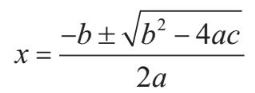
更进一步，为了发明出能制造这些解方程机器的机器，我们就需要理解“代数基本定理”（fundamental theorem of algebra）：任何一个一元复系数方程都至少有一个复数根。我们在后文中会对这个定理进行解释。
一个关于抽象的例子
我还记得第一次做英国中等教育普通证书（GCSE）资格考试的数学考试题时的一道题目。那道题是关于在给定可以切的刀数时，能把蛋糕切成最多块的方法的。很显然，如果你只能切一刀（直线），你就只能得到两块蛋糕，如果你只能切两刀，那么你最多只能得到四块蛋糕。但是如果你可以切三刀、四刀，甚至更多的刀数呢？
切三刀得到最多块蛋糕的方法如下所示，使用这种切法，你可以切出7块蛋糕。
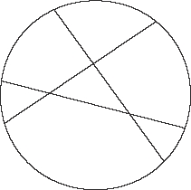
对于这个问题，你的第一反应也许和我的一样：这个问题好傻，谁会这样切蛋糕？这样切出来的蛋糕都是不同形状的，完全没有意义。对于切蛋糕来说，真正重要的是什么？是最多能切多少块，还是切出来的蛋糕大小形状是否平均？
现在，让我们暂且不去考虑蛋糕大小形状的问题，而是尝试着通过这个切三刀、四刀……的实验，得到一个公式，用以在给定刀数的情况下计算出能切的最多块数。也就是说，我们的目的不在于解决这个具体的问题，而在于研发一种机器，用于解决这一类的问题。这就是我们学到的那些含有x、y以及其他东西的公式的本质——一台机器。如果我们有了这样一台机器，我们就可以把给定的刀数输入这台机器，然后，这台机器就会给出一个答案：你能切出来的蛋糕的最多块数。一个公式甚至比一台机器还要更好：它能告诉你它所代表的那台机器是怎么工作的，而非仅仅作为一个神秘的黑匣子出现。所以，如果这个公式告诉你，问题的答案是：
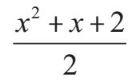
它的意思就是，我们可以把x替换成给定的刀数，代入具体数值后计算出的结果就是能切出来的蛋糕的最多块数。同样，这也是一种抽象，因为你并不是在解决某个具体的问题，而是在讨论一个假设的问题。你并不是真的在解决问题，而是在想如何解决问题。除了写出公式本身外，你也可以把所有可能的答案列成一张表，如下所示：
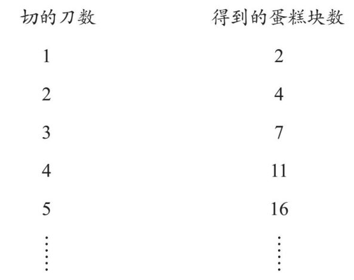
你不可能把这张表真的“写完”，在某个时候，你不得不停下来，因为纸不够用，你的时间也不够用。但公式则不同，它不会“停止”——它是一个可以给出任意给定刀数下你能得到的蛋糕块数的最大值的机器。
也许你不需要准备中等教育普通证书的考试，但也许你的孩子们要准备这个考试，而你需要为他们提供辅导。你辅导他们，但你并不会代替他们参加这个考试。所以，这也是一个元问题——我们要做的不是真的去解决这个问题，而是试图找到让别人能够解决这个问题的方法。教书与此有异曲同工之妙，因为你并不是直接告诉学生们问题的答案，而是试着教会他们自己找到答案——这与你自己直接回答这个问题隔了一层。培训老师又是更上一层的抽象了。以此类推，接下来的一个问题就是，谁来培训这些培训老师的人？
做蛋糕并不需要耗费多少脑力，但发明一种新的蛋糕烹饪方法就不一样了，你需要变得比之前更聪明一些。发现一个新的数字显然已经不是一件多么“有趣”的事，因为我们已经知道给出所有新数字的方法了。如果你找到了治愈癌症的方法，却只是一个病人一个病人地进行治疗，而没有向全世界通报这个治愈癌症的方法，那么这简直可以说是不道德了。
所有这些关于抽象的例子确实让我们远离了现实一步，但我们由此得到的是一个更广阔的视角。如果你把一支火把放得远一些，这支火把就会照亮更大的区域——但也要注意别放得太远，因为那样的话光就变得太暗了。
抽象是理解数学的关键。抽象也是数学看起来远离“实际生活”的原因所在。这种与实际生活的疏远正是数学发挥其优势的地方，同时也是它的局限性所在。每一层次的抽象都使得数学更加远离实际生活，也使得解释它与实际生活的关联变得更加困难，因为这种关联有一种多米诺骨牌效应——抽象的数学也许不能直接应用于实际生活，但它可以间接地应用在另一种事物上，而那种事物可以直接应用于实际生活。这样的应用链可以包含好几节，比如：
范畴论 → 拓扑学 → 物理学 → 化学 → 医药
抽象是理解为什么数学与普遍意义上的科学有所不同的关键。对以实证为基础的科学来说，证据总是最重要的。首先你需要提出一个“假设”——一个你觉得可能正确的理论，不论这个理论是源自观察、直觉、怀疑、偶然见闻还是其他。然后，你需要通过寻找符合科学标准的证据来严格检验这个假设。这些科学的标准包括：
• 样本量要足够大。三四个实证性案例只能被视为“逸事证据”，很可能并不可靠。
• 证据必须是经过变量控制的。你必须考虑到其他可能影响结果的因素，比如安慰剂效应、社会经济因素、实验参与者的年龄等。
• 证据必须是客观的、无偏见的。比如，药剂实验就必须被设计为“双盲试验”，也即主试和被试都不知道他们拿到的药剂到底是真正的实验药物还是安慰剂。
最后，你得到的结果必须符合统计学标准。你可能得到了一大堆非常有说服力的证据，但你的最终结论总是需要附带一个表示该结论确定性的百分比。
数学则与此不同。数学研究的第一步与其他科学没什么不同——提出一个你认为正确的假设。但接下来就不一样了，我们不再使用实证性的方式来严格检验这个假设，而是使用逻辑来严格检验这个假设。此处的“严格”就其定义而言与一般科学意义上的“严格”完全不同。它与样本大小无关，因为数学研究并不涉及任何样本，而只关乎思考、推演的过程。主观感觉也不会影响这个过程，因为我们所做的只是应用逻辑规则而已。
打个比方，假设你想弄清楚要完全覆盖某尺寸的蛋糕表面需要多少糖霜这个问题。你可以直接做个实验——烤一个蛋糕，加上糖霜，然后看看你一共用了多少糖霜。或者，你也可以用逻辑进行推理——做一个关于蛋糕表面积的计算。要计算这个蛋糕的表面积，你需要先对蛋糕的形状进行模拟——比如，你可能需要假设它的表面是一个完全规则的圆形，且表面是完全平滑的。当然，实际生活中并不存在完全规则的圆形和完全平滑的蛋糕。但这个方法的好处在于，你不需要真的去做一个蛋糕才能弄明白具体需要多少糖霜。
使用逻辑推理来代替实验有许多好处。
假设你现在想知道的是盖一座房子需要多少块砖。显然，为了弄清楚这个问题而专门盖一座房子是不切实际的。与此类似，假如你想弄明白的是改变一条公路的路线会如何影响交通流量呢？
假如你想知道的是一座桥可以承受的最大运载量呢？显然，你不可能让很多的车辆驶上桥面，然后观察桥会在什么时候崩塌。
假如你想知道的是为什么太阳每天都会升起来，或者为什么行星的运行轨迹是这样而不是那样的呢？你显然不可能改变外太空的状况，然后看看行星会不会改变运行轨迹。
假如你想知道的是某种传染病是如何传播的呢？显然，你不可能在人群中散播这种疾病的传染病菌，然后看看它是如何传播的，因为这正是你想避免的事情。
在我写作本书的时候，我听说有人提出了扑杀獾可以减少牛群肺结核感染率的主张。但是，我们该怎样检验这个假设呢？通过杀死很多獾来看看结果如何真的合乎道德吗？
在以上这些情况中，逻辑推理显然要更胜于实验论证。前者最重要的优势在于，借助逻辑推理，你所得出的结论不仅仅是“几乎肯定是正确的”，更是完全不可辩驳的。
逻辑性论据包含一系列的主张，其中的每一个判断都是完全依据逻辑由上一个判断推导出来的。这很好理解，但问题在于，第一个判断从何而来？例如，你可以假设你的蛋糕表面是完全规则的圆形。你可以假设一个携带传染病菌的人遇到另一个人后将这种疾病传染给对方的概率是50%。这些基础的假设构成了抽象过程的一部分。它们通常会涉及对实际生活中的事物的理想化，由此你就可以运用逻辑对它们进行推理。这种做法的弊端在于，经过理想化的事物与实际生活中的事物不完全相同；而它的优势在于，在完成了理想化处理之后，你就可以运用逻辑来分析它们并得出结论了。你得到的最终结果的不准确之处就源于你最初对实际问题进行抽象化处理的过程中所丢掉的信息。这与统计结果截然不同，因为后者的不准确之处在于，虽然有证据支持你的假设，但你的假设仍然有很小的概率是错的。
采用数学的方法（与之相对的是通常人们所说的“科学的方法”）要求你必须清晰地陈述你的假设是什么。人们可以不同意你的假设，但是他们不能不同意你的结论，也就是说：
如果我们做了这样的假设，那么由此假设推导出的这个结论就是正确的。
例如，如果一只鸡够10个人吃，那么两只鸡就够20个人吃。你可以不同意一只鸡够10个人吃这一假设（也许不够10个人吃，除非是某种转基因巨型鸡），但你不能不同意这个结论：
如果一只鸡够10个人吃，那么两只鸡就够20个人吃。
但这个结论还是存在一个可能的漏洞：所有的鸡都一样大吗？我们也许可以加上“所有的鸡大小都差不多”这条假设以确保这个问题可以用数学解答。
这是一个不切实际的假设吗？如果你要给一个40人的聚会订烤鸡，那么你很有可能需要做类似的运算，即便每只鸡的大小并不是完全一样的。当然，你也可以用实验的方法来解决这个问题：也许你可以依赖餐饮服务商的经验，理论上他们拥有足够多的聚会餐食供应经验，知道你应该订多少只鸡。
抽象之所以让人觉得难以理解，是因为它带我们离开了具体事物的世界，而进入只存在于头脑中的“概念”的世界。但有一些抽象概念我们已经十分熟悉了，因而我们不再能意识到它是一种抽象。打个比方，如果我们开始思考一般的鸡有多大这个问题，我们事实上就已经在进行抽象思考了：一只“一般的鸡”并不是一只具体的鸡，而是一个关于鸡的概念。还有我之前提到的，数字也是一种抽象。数字1、2、3、4……只是一些概念。也正是因为它们是概念，我们才得以使用纯粹的逻辑推理来处理它们。
抽象的美妙之处在于，在你对某个抽象概念已经非常熟悉了以后，它似乎就变成了一个具体的事物，而不再是一个想象出来的概念。你也许已经很习惯“2”这个概念，这意味着你已经适应了这种程度的抽象。而对于“-2”这个概念，你可能就没有那么习惯了。那么2的平方根呢？这是一个自己乘以自己等于2的数字。但它到底是什么呢？你也许会说它是1.414…，但这是一个无限不循环小数——你没办法把整个数字写出来，如此一来你该如何知道它到底是什么呢？那么-1的平方根呢？我们稍后会进一步探讨这些问题，并说明为什么对于严格的数学来说，2的平方根比-2的平方根更复杂，甚至比-1的平方根更复杂，虽然直觉上我们会认为-1的平方根更难理解，因为“现实生活”中并不存在与此对应的实际事物。
抽象这一过程多少有些类似于运用你的想象力。数学的抽象带领我们进入一个想象的世界，在这里，任何事情都有可能发生，只要它的存在不是自相矛盾的。你能想象透明的乐高积木吗？这并不是很难。那么软软的像橡皮泥一样的乐高积木呢？这就有些奇怪了。那么被碰到就会自动变颜色的乐高积木呢？或者四维的乐高积木？隐形的乐高积木？早上会给你煮咖啡的乐高积木？当然，你能想象出来一样事物，并不意味着它就能存在于实际生活中——尤其是如果你的想象力很丰富的话。而数学世界的美妙就在于，一旦你想象出一个数学概念，它就真正在这个世界中存在了。你的想象力越丰富，你就越有机会探索更多的数学领域。另一个我们很熟悉的抽象概念是形状。正方形是什么？它是一个包含4条相等的边和4个相等的角的形状。但现实生活中存在完美的正方形吗？不存在。仔细考量的话，现实生活中的正方形都不是绝对完美的正方形。圆形也是如此。直线呢？真的存在完美的直线吗？我想答案是否定的。不过，虽然现实生活中的直线不过是趋近于完美直线这个概念的近似物，但我们显然已经非常习惯使用这个概念了。
现在我来讲讲如何用抽象的办法解决我们之前提出的两个问题，这样你就可以看出抽象化具体是怎么运作的了。
我爸爸的年龄现在是我的3倍，而10年以后他的年龄将会是我的2倍。那么我现在几岁呢？
我用x代表我的年龄，y代表我爸爸的年龄。如此，“爸爸的年龄是我的年龄的3倍”就可以写成：
y=3x
到目前为止还很简单。但“10年后他的年龄将会是我的年龄的2倍”就有些复杂了。这一步的关键就在于，10年之后，我的年龄将会变成x+10，他的年龄将会变成y+10；我们还知道，那时候他的年龄将会是我的2倍，也就是说：
y+10=2（x+10）
我们可以将第一个等式代入第二个等式，即用3x替代上面这个等式中的y，如此，我们就得到：
3x+10=2（x+10）
=2x+20 …… 去掉括号做乘法运算
x+10=20 …… 两边同时减去2x
x=10 …… 两边同时减去10
所以我们得出结论：我现在的年龄是10岁（我爸爸的年龄为30岁）。
请注意，在上述计算中，我们采用了如下几个步骤：
1. 我们从一个用文字描述的“实际生活”问题入手。
2. 我们运用抽象的方式将这个问题转变为逻辑概念。
3. 我们借助逻辑规则来处理这些抽象的概念。
4. 我们取消抽象，将问题的答案放回实际生活场景之中。
我们还可以进一步抽象。刚才我们所进行的工作帮助我们解决了上述那道应用题，但如果进一步抽象，我们就可以解决所有类似的问题。
对于刚才的题目，我们是从两个具体的方程入手的：
y=3x
y+10=2（x+10）
现在，我们可以用字母来替代那些具体的数字，这样我们就可以解决参数为任意数字的这两个方程了：
y=a1x+b1
y=a2x+b2
我们原题目里的第二个方程看起来可能与这里的第二个方程并不相同，但是当你把原方程中的y移到等式的左边时，它就变成了：
y=2x+10
现在，由于两个等式的右边相同，都等于y，因此我们可以把上述两个适用于一般情况的方程转化为一个方程，如下所示：
a1x+b1=a2x+b2
如果我们把包含x的项都放到同一边，我们就得到了：
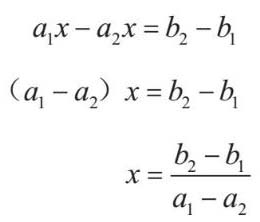
除a1=a2这种特殊情况外，我们在最后一步得出的解都是有效的；而如果是a1=a2，则我们必须使b1=b2，也就是说，与y相关的两个等式是一样的，如此我们就没有足够的信息来确定x和y的具体数值了，这意味着，这个问题有无穷多的解。
现在我们来看另一个例子。
我已经知道覆盖一个6英寸蛋糕的表面和侧面需要用到多少糖霜了。那么，覆盖一个8英寸蛋糕的表面和侧面需要用到多少糖霜呢？
我们假设两个蛋糕的表面都是圆形，而且都有2英寸高。我们需要算出6英寸和8英寸蛋糕的糖霜覆盖面积，看看后者比前者大多少。因为两个蛋糕的表面都是圆形的，所以直接计算半径为r的蛋糕表面的面积相对省力，只需要代入r=3或 r=4（半径为直径的一半）即可。以下为具体步骤：
• 蛋糕的表面是一个圆形，所以这个圆形的面积为πr2。
• 蛋糕侧面的面积是它的高度乘以圆形表面的周长。圆形周长为2πr，所以蛋糕侧面的表面积为2×2πr=4πr。
• 所以，覆盖一个表面半径为r的蛋糕所需的糖霜为πr2+4πr。
现在，我们可以用这个方法来算出覆盖两个不同尺寸的蛋糕分别所需的糖霜：
• 对于6英寸蛋糕来说，其半径为3，所以我们需要糖霜覆盖的总面积就是：
（π×32）+（4π×3）=9π+12π
=21π
• 对于8英寸蛋糕来说，其半径为4，所以我们需要糖霜覆盖的总面积就是：
（π×42）+（4π×4）=16π ＋ 16π
=32π
最后我们需要把这个结果转化为一个可以直接应用在做蛋糕上的数字。我们需要知道的是，做一个8英寸蛋糕要比做一个6英寸蛋糕多用多少糖霜，所以我们需要知道上面的第二个面积总和比第一个面积总和大多少。也即，我们需要用第二个蛋糕的面积总和除以第一个蛋糕的面积总和。
• 就面积总和而言，8英寸蛋糕与6英寸蛋糕的比就是：
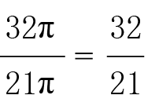
因为这只是一个关于覆盖蛋糕表面需要用到多少糖霜的问题，而不是一个有关用药剂量之类需要精确计算数值的问题，所以我们在这里取一个近似值即可：32/21大约等于1.5，也就是说，你需要依照6英寸蛋糕配方中配料的1.5倍来准备，才能做好8英寸蛋糕的糖霜。
在这个问题中，值得注意的是，我们做了一个假设，即蛋糕有2英寸高，所以最终的答案可能不够准确，但不准确的原因只在于这个假设。所以我们最终的、无法辩驳的结论是：
如果所有蛋糕都是2英寸高，
那么我们就需要按原配方中配料的1.5倍准备原材料。
这个关于蛋糕的例子比那个计算儿子和爸爸的年龄的例子更实用一些。关于年龄的那个问题只是一个简单的脑筋急转弯，而关于糖霜的这个问题则是一个抽象思维在现实生活中帮助我们解决问题的实例。当然，我们也可以通过实验的方法得出答案，比如做出一大堆糖霜来看看大一些的蛋糕会用掉多少，但那样做很可能会造成浪费。抽象的方法会耗费更多的脑力，但它不会浪费那么多的糖霜。
1英寸≈ 2.54厘米。——编者注